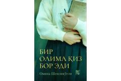

BOBilimli bir qizning hayoti va taqdiri haqida ta'sirchan roman.
Bu kitob Omina Shenlikʻoʻgʻlining 'bir olima qiz haqida romani' deb tavsiflanган asaridir. Kitob NIDO nashriyoti tomonidan Toshkentda 2024-yilda chop etilgan va o'zbek tiliga Islomxon Sobitxon hamda Zieda Nosir tomonidan tarjima qilingan. Roman bilimli va aqlli bir qizning hayoti, taqdiri va kechinmalarini tasvirlaydi.